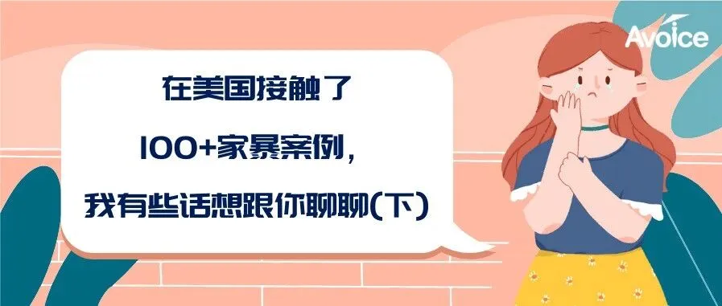
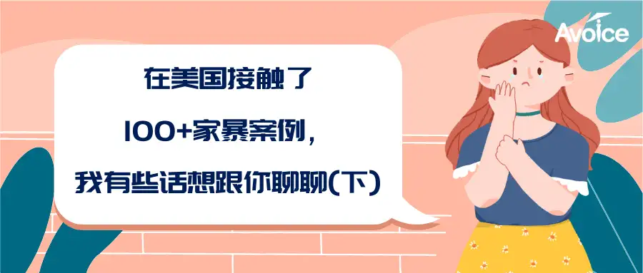
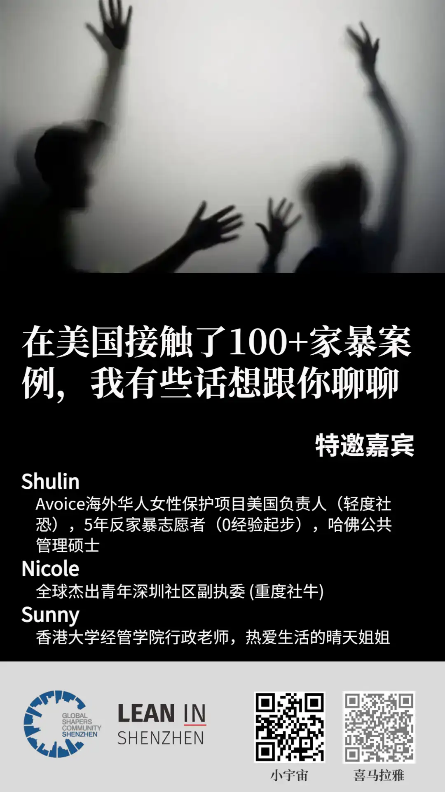

（扫描／长按上图二维码，
进入喜马拉雅／小宇宙平台听播客哦～)
Vol.1/ 内容简介
Brief introduction
欢迎来到由励媖深圳和全球杰出青年深圳社区联合出品的【野声女孩观察家】栏目。
上一期我们和Shulin聊了关于
反家暴的初理解、海外反家暴的实践经历以及如何看待家暴及改善相关者的情况三个内容，如果刚好上一期你还没有听，也可以点击下方链接订阅收听哟～
这一期我们将着重分享如何看待家暴及改善相关者的情况，同时为大家普及反家暴服务组织 。希望本话题的观点输出可以帮助到每一个面临家暴问题的迷茫者。
Vol.2/ 内容速览
Content at a glance
Part 4 如何看待家暴及改善相关者的情况？
00:05 作为旁观者，如何看待家暴受害者？
07:13 如何识别家暴的信号？
10:05 受害者该如何重塑心理健康？
13:34 旁观者该如何帮助受害者？
Part 5 了解反家暴服务组织
14:30 Avoice在海外的项目及服务介绍
16:40 如何从个人角度抵制暴力
19:09 请向组织取得联系吧
Vol.3/ 金句集锦
Golden sentence
1、性别暴力，尤其是家庭暴力的本质，其实就是家庭内部权力的不平等；
2、首先作为旁观者来说，先珍惜这段信任，不要去评判ta。不带任何评判的倾听是不容易的，但也是很有必要的；
3、每一个人的性格处境、资源都是不一样的。
这个时候如果你知道有什么资源，你可以告诉ta，以智囊的方式帮助ta，而非是ta的上司，告诉ta下一步要做什么；
4、旁观者其实是受害者的第一道屏障，ta可能会去找自己信赖的家人、朋友说这个事情，然后才迈出下一步。他们可以先一步地吸收更多的信息，然后以更好的信任的方式传达给受害者；
5、家暴循环模型：家暴一般可以分为三个阶段：
第一阶段是紧张期：伴随着不断的争吵和轻度的暴力；
第二阶段是爆发期：就是实际上剧烈的暴力、拳脚相向等；
第三阶段是蜜月期：此时施暴者会开始道歉、求饶，期望受害者接纳。
Vol.4/ 栏目介绍
Column introduction
野声女孩观察家是由励媖深圳与全球杰出青年深圳社区联合出品的一档女性跨界对话播客栏目。
每一期，我们邀请跨年龄/专业/性别/...的嘉宾组合，针对女性议题各抒己见，旨在打破不同年龄、身份、背景的人之间的交流之壁，在多元人群身上看到对同个女性议题更多诠释的可能性，发出散布在不同领域、经历着不同人生阶段的女性的声音，为女性社会议题提供更多的思考路径。
励媖深圳：Lean In Shenzhen是一个专注于职场女性的非盈利公益社群，立志于建立唤醒自我意识、挖掘女性魅力、发觉女性潜能的多元化平台。
全球杰出青年社区深圳社区 ：GSC Shenzhen是是世界经济论坛全球杰出青年社区在广州设立的唯一分支机构，面向年龄在18-28岁之间、有创业经验和社会贡献的未来领导人。该项目旨在发挥年轻人的创新能力和热情，构建一个共同繁荣、更具包容性的世界。
播客主持人：Nicole、Sunny
大纲设计：Like
音频剪辑：Lily
海报设计：Yalan
文案/排版：Eunice、千寻、王丹君、Ava